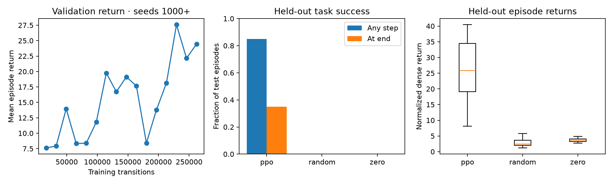

PHYSICAL AI FOUNDATIONS · WEEK 3 · MANISKILL PUSH CUBE
The first learned policy.
Measured across complete episodes.
PPO trained for 262,144 transitions on the existing ManiSkill task. CPU physics, state observations, joint PD actions. One trained model; 20 fixed test seeds.
Learned to push. Still learning to hold.
| Policy | Reached goal | Inside goal at end | Mean return |
|---|
| PPO | 17 / 20 · 85% | 7 / 20 · 35% | 25.646 |
| Random actions | 0 / 20 | 0 / 20 | 2.915 |
| Zero actions | 0 / 20 | 0 / 20 | 3.673 |
Nine temporary successes ended outside the goal radius; one ended inside in xy but lifted the cube too high. Temporary success is different from meeting the full final-state criteria. The episode-sampling 95% interval for reaching success is 64.0%–94.8%; this does not measure training-seed variability.
Learning curve and baseline comparison

Native simulator rollouts
The first three test seeds, including temporary successes. Videos play at the simulator's control rate. Use the controls to pause or scrub.
Seed 10000 · leaves the goal
Reached during the episode; outside at the end.
Seed 10001 · lifts the cube
Inside the xy goal radius, but lifted above the allowed table height.
Seed 10002 · finishes inside
Reached and remained inside at the final step.
Same seed 10000 · zero actions
Zero joint increments and neutral gripper, with built-in PD still active.